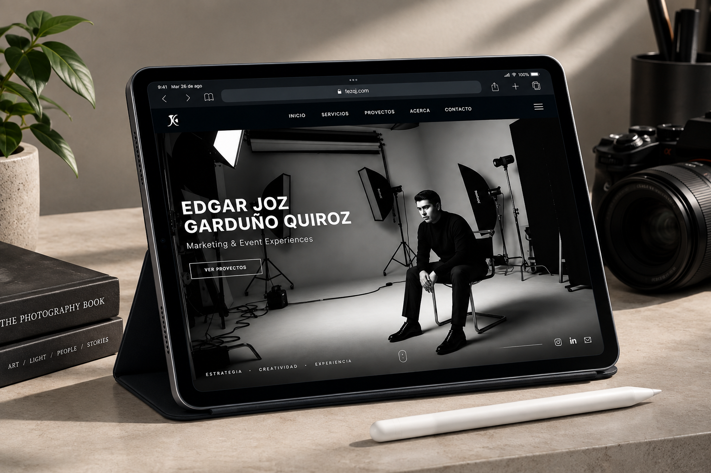
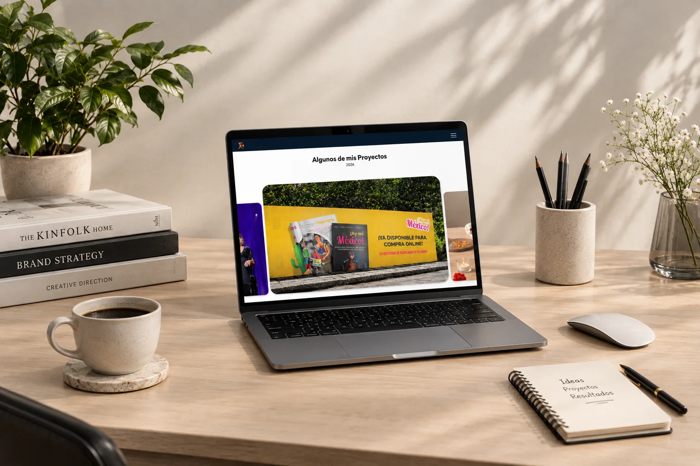

Experiencias Digitales
marcas que también se viven en pantalla.
Diseño web / Dirección de arte / UX / Invitaciones digitales
Diseño de páginas web, micrositios y piezas digitales con una dirección visual pensada para trasladar la identidad a la pantalla.

Diseñar también es ordenar una experiencia.
La web funciona como un punto de contacto donde contenido, jerarquía visual y navegación tienen que trabajar juntos.
Esta línea de trabajo reúne proyectos de páginas web y experiencias digitales, además de invitaciones digitales cuando el proyecto lo requiere.
